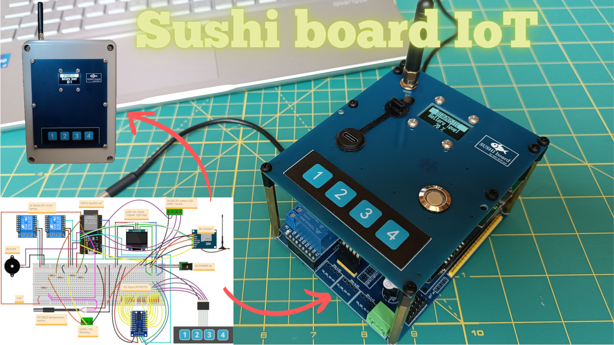

Sushi IoT Board
Sushi Board is an ESP32-based programmable modular embedded system for general-purpose IoT, suitable for STEM education and DIY electronics projects. 100% based on widely available commercial modules, making it cost-effective and easy to source.

- Examples & projects
- Suhi Board GitHub repo
- Sushi-IoT on Instagram
- Sushi-IoT on HACKADAY
- Sushi-IoT-Framework
- Project on Kickstarter
For MAKERs
- A carrier board that connect all the essential components needed to create a complete IoT unit, suitable for various applications, minimizing the complexity of assembling different components and boards without requiring extensive soldering or wiring.
- Only the CPU is mandatory; then you simply plug in the modules you need for your specific purposes.
For students and educational purposes
- Sushi Board offers a modular system that can be shared across multiple projects, from simple setups to more complex, DIY electronics systems.
- It’s not just for desk experiments; you can build something practical and functional.
Advantages
- Based on ESP32 SoC: a reliable choice in the IoT field. You have access to a powerful ecosystem with numerous resources available online.
- 100% based on very common commercial modules widely available online for Arduino and DIY electronics projects. Sushi board just help you connect them all together.
- You can code with your favourite compiler : Arduino, microPython (even without a PC), Scratch, ESP-IDF, etc.
- Open source hardware: both the CPU module and the Sushi Board come with wiring diagrams provided.
Applications
- Generic IoT & sensors educational experiment
- Fast prototyping
- Home automation systems
- IoT central units
- Alarm systems
- Domotics servers
- Remote monitoring and data sampling systems (example weather centrals)
- Local and remote devices control (by local user interface, web interface, modem interface)
Hardware features
All the ingredients that are needed for a myriad of applications:
- ESP32-DevKitC V4
- 16x digital GPIN
- 2x Relay OUT (10A 250V AC)
- 5x digital direct GPIO, 1 x GPO , 2 x GPI (LEDs, extra UART, etc.)
- Physical keyboard
- OLED Display
- Connectivity: Wi-Fi, Bluetooth, modem 2G/3G/4G, UART, I2C
- Power supply modes: 5V (USB adapter or wired) ; Battery only ; 5V + backup battery (for when grid power is missing)
- Backup battery
- Power status and battery level acquisition
- Buzzer for audio alerts
- Temperature sensor
- Size: 90x110 mm (both carrier and TOP boards)
Why Sushi ?
The name "Sushi board" comes from the idea that, like sushi—a traditional Japanese specialty—the Sushi board is composed of various ingredients (the modules) that can be added or customized based on your preferences.